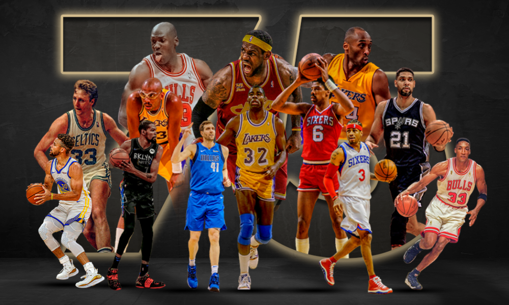

.webp)

On August 3, 1949, after a damaging three-year battle to win both players and fans, the rival Basketball Association of America (BAA) and National Basketball League (NBL) merged to form the National Basketball Association (NBA). The BAA incorporated in 1946, challenging the hegemony of the nine-year old NBL.
The league was founded in New York City on June 6, 1946, as the Basketball Association of America (BAA). It changed its name to the National Basketball Association on August 3, 1949, alfter merging with the competing National Basketball League (NBL). In 1976, the NBA and the American Basketball Association (ABA) merged, adding four franchises to the NBA. The NBA's regular season runs from October to April, with each team playing 82 games. The league's playoff tournament extends into June. As of 2020, NBA players are the world's best paid athletes by average annual salary per player.
Shaquille O'Neal made only 1one three-point shot ever
Air Jordans were once banned from the NBA
Kobe Bryant's first NBA contract was co-signed by his parents
The shortest player and the tallest player in NBA history played once for the same team
NBA is now more than 71 years old
LeBron James eats and writes with his left hand
60% of NBA players become broke after 5 years of retirement
There has never been a quintuple-double in NBA
Shaq challenged Hakeem to a one-on-one
The shortest player in NBA history blocked 39 shots